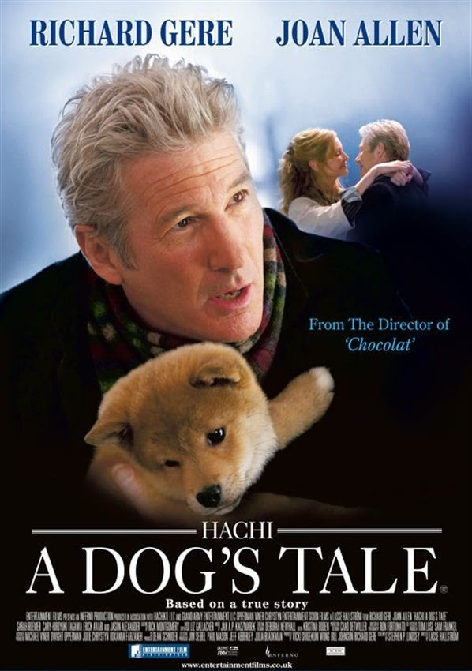

Before the entire class, young Ronnie tells the story of his grandfather's exceptional Akita dog. As Ronnie starts to recount the chance encounter of his grandfather, the college music teacher, Parker Wilson, with the abandoned puppy that accidentally ended up in the professor's hometown of Rhode Island, an incredible story of loyalty and devotion begins to unfold. Indeed, at first, Parker intended to find the dog's owner; but, instead, after realising that nobody claims the dog, he decided to keep the abandoned puppy, naming it Hachiko. Then, tragedy struck, giving the perfect example of the strong, the unwavering, and sometimes, the unexplainable bond that can form between a man and an animal.